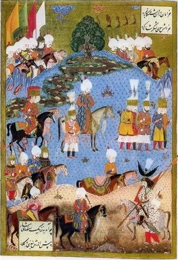

«Благородный Паша вознес к небесам горячую молитву и приказал рулевым пройти так близко к батареям неверных, как возможно; однако он запретил своим войскам стрелять из пушек и фузей. Доблестный флот империи продефилировал перед неприступной крепостью Родоса чтобы укрыться у подветренной стороны мыса Eukus Bournou (Cavo-Bovo). Но якорная стоянка оказалась очень плохой и флот там был защищен не лучше, чем если бы он был в аду. Неверные, когда флот проходил мимо крепости, открыли огонь из всех амбразур. Благородный Паша молил аллаха, чтобы их каменные ядра прошли выше кораблей Ислама, не причинив им никакого вреда. Однако несколько ядер, выпущенных с форта Mendrec (св. Николая –g._g.), задели один или два корабля, которые были взяты на буксир. Много неверных по звуку трубы выбежали и распределились вдоль побережья, чтобы помешать высадке. Одно большое орудие, которое находилось на бастионе Tiosmani (сектор обороны итальянского ланга. –g._g.), открыло огонь громадными каменными ядрами по месту, выбранному для якорной стоянки. Одно из этих ядер попало в галеру Куртоглу, разбив одно весло, но, благодаря аллаху, не убило ни одного из людей. Все капитаны тотчас же собрались на совет, признав, что выбранное для якорной стоянки место плохо защищено от огня артиллерии из крепости и приняли решение перейти на новую якорную стоянку в Мармарис, большую гавань на анатолийском берегу как раз напротив Родоса. Это решение было представлено на высочайшее утверждение благородному Паше, который вместе с некоторыми капитанами высказался за то, чтобы крепиться и рассчитывать на помощь аллаха. Во время обсуждения этого важного вопроса в Eukus-Bournou прибыл один раб-мусульманин, которому удалось бежать из крепости. Он рассказал благородному визирю, Паше и капитанам, которые пока не смогли принять решение, что громадное орудие, которое было размещено на стене над воротами Kyzil-capou (ворота Св. Жана или ворота Coskinou – «Красные ворота», они и сейчас так называются –g._g.), и ядра, пущенные из которого, достигали Eukus-Bournou, разорвалось, когда его зарядили камнями, цепями, гвоздями и свинцом, чтобы нанести возможно больший ущерб доблестному флоту Империи. Аллах обратил на неверных губительные последствия выстрела, которым они намеревались поразить противника. Этот событие ошеломило неверных."
"Получив эту хорошую новость, удачливый Паша наградил раба богатыми одеждами и назначил ему пожизненную пенсию по 10 аспр (120 аспр = 1 пиастру) в день. Храбрые воины ислама, которые были тут же проинформированы о этом счастливом событии, возликовали и возблагодарили аллаха. Тут же был отдан приказ снять с каждого корабля орудия большого калибра и свести их в осадные батареи перед городом. Но крепость была построена искусными мастерами.»
Далее в рукописи приводится подробное описание фортификационных сооружений Родоса, особенности которых мы рассмотрели ранее.
«Все эти укрепления делали город Родос настолько неприступным, что нет таких слов, которыми это можно было бы описать. И эту неприступную крепость должен был взять с помощью Всемогущего славный султан.»
«С разрешения своих командиров солдаты стали распределяться по окружающим городами и деревням, где они раздавали бедным деньги и подарки, и так как не причиняли никому вреда, то были встречены с благословением. Однако неверные, которые смотрели с высоты стен крепости, вели огонь по всем турецким подразделениям, которые они видели, из своей артиллерии, что делало позиции высадившихся войск небезопасными. Между тем, благородный Паша решил вывести все орудия с кораблей и разместить их на позициях до прибытия великодушного султана. Но сначала необходимо было сделать дороги для доставки орудий. К работе приступили немедленно. Землекопы разбивали камни и укладывали их в мостовые. Им помогали все свободные воины под наблюдением благородного визиря, который уже в течение длительного времени не знал отдыха ни днем, ни ночью.»
«Тем временем славный султан прибыл в Мармарис, разбил свой шатер на местности, именуемой Cara-Bounar и известил свой флот о прибытии к Родосу и начале успешного завоевания. Его благородный визирь, со своей стороны, принял все меры по приему воинов и мусульманские шатры покрыли всю равнину вокруг крепости подобно цветкам гиацинта. Султан взошел на флагманскую галеру и эскортируемый всем флотом, выстроившимся в боевые порядки по эскадрам, под всеми парусами, имея всех офицеров на своих боевых постах, высадился на остров перед крепостью. Увидев это, неверные – горожане и воины – поднялись на стены, призываемые звуком трубы, и их охватил страх. Славный султан справа от себя имел необъятные просторы своей страны, слева – победоносные войска, которые взяли Александрию. Перед ним находились Ага янычар и визири, несущие священное знамя пророка; из крепости стала доноситься канонада.»
Остановимся пока на этом моменте из записок Ахмеда Хафуза, чтобы вновь вернуться к описанию осады на основе мнения более объективных историков. Сделаем это в следующий раз.